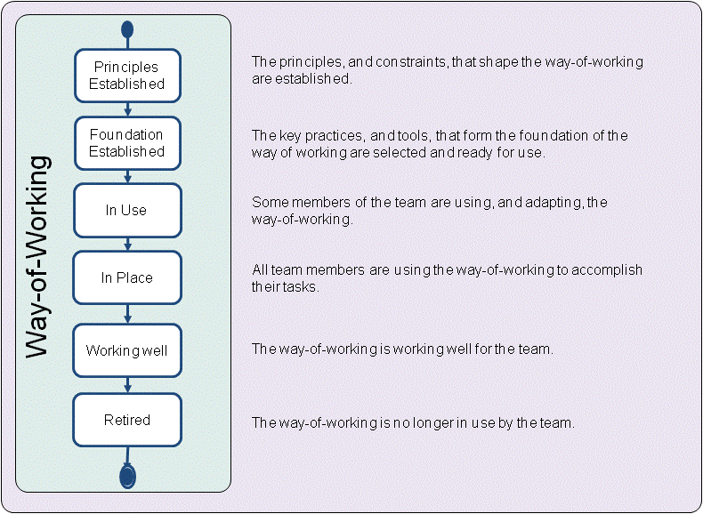

Essence Kernel
Way of Working: The tailored set of practices and tools used by a team to guide and support their work.
The team evolves their way of working alongside their understanding of their mission and their working environment. As their work proceeds they continually reflect on their way of working and adapt it to their current context, if necessary.
Software engineering is a team sport, one that requires the whole team to collaborate effectively regardless of how the team is organized. They need to agree on a way of working that will guide them throughout the software engineering endeavor.
The way of working:
During the course of a software engineering endeavor the way of working progresses through several state changes. As presented above, they are principles established, foundation established, in use, in place, working well, and retired. These states focus on the way a team establishes an effective way-of-working indicating (1) when the principles and constraints that shape the way-of-working are established, (2) when a minimal number of key practices and tools have been identified and integrated to establish a foundation for the evolution of the team’s way-of-working, (3) when a team’s way of working is in use by the team, (4) when a team’s way of working is in place and in use by the whole team (5) when it is working well, and (6) when the way of working has been retired and is no longer in use by the team.

There are many ways of working that the team could adopt to meet their objectives and establish their approach to software engineering. The first step in adopting a new way-of-working, or adapting an existing way-of-working, is to understand the team’s working environment and establish the principles that will guide their selection of appropriate practices and tools. This includes identifying the constraints governing the selection of the team’s practices and tools and understanding the practices and tools that the team, and their stakeholders, are already using or are required to use.
It is not enough to just understand the principles and constraints that will inform the team’s way of working. These must be agreed with, and actively supported by, the team and its stakeholders. Once the principles are established the team is ready to start selecting the practices and tools that will form their way-of-working.
To establish a natural way of working the focus should first be on the key practices and tools; those that bring the team together, enable communication among the team members, support collaborative working and are essential to the success of the team. However, these practices and tools act as the foundation for the team’s way-of-working. Before the foundation can be assembled it is important to understand the gaps between the practices and tools needed by the team and the practices, and tools immediately available to the team. This enables the activities needed to fill these gaps to be planned.
Once the key practices and tools are integrated then the way-of-working’s foundation is established and the way-of-working is ready to be trialed by the team. It will however be continuously adapted as the work progresses, and additional practices and tools will be added as the team inspects their way-of-working and adapts it to meet their changing circumstances.
Rather than spending more time tailoring or tuning the way-of-working it is important that the team puts it into use as soon as possible. The way-of-working is in use as soon as any of the team members are using and adapting it as part of completing their work. As more and more of the team start to use and benefit from the way-of-working its usage will grow until it is firmly in place and all the team members are using it to accomplish their work. Some team members may still need help from their teammates to understand certain aspects of the team’s way of working and to make effective progress, but the way of working is now the normal way for the team to develop software.
As the team progresses through the work, the way of working will become embedded in their activities and collaborations to such an extent that its use, inspection and adaptation are all seen as a natural part of the way the team works. The way-of-working is working well once it has stabilized and all team members are making progress as planned by using and adapting it to suit their current working environment. Finally, when the way of working is no longer in use by the team, it is retired.
Understanding the current and desired state of the team’s way of working helps a team to continually improve their performance, and adapt quickly and effectively to change.
The principles, and constraints, that shape the way-of-working are established.
The alpha is in this state when:
The key practices, and tools, that form the foundation of the way of working are selected and ready for use.
The alpha is in this state when:
Some members of the team are using, and adapting, the way-of-working.
The alpha is in this state when:
All team members are using the way of working to accomplish their work.
The alpha is in this state when:
The team’s way of working is working well for the team.
The alpha is in this state when:
The way of working is no longer in use by the team.
The alpha is in this state when:
N/A
N/A
Copyright © 2012 Ivar Jacobson International AB, Florida Atlantic University, Fujitsu, Impetus, International Business Machines Corporation, KTH Royal Institute of Technology, Metamaxim Ltd., PEM Systems, Stiftelsen SINTEF, University of Duisburg-Essen. , ver. 1.0.3